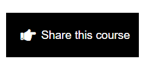
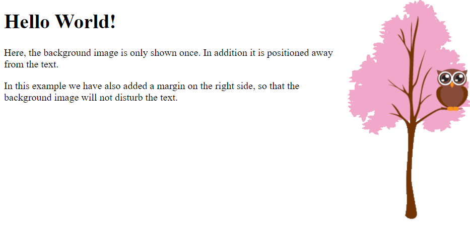
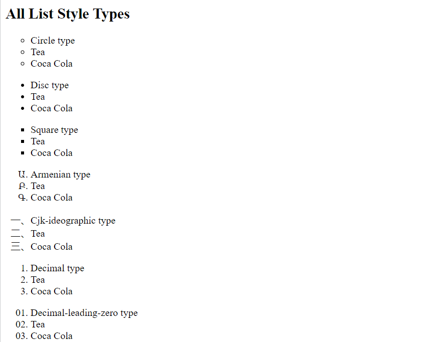
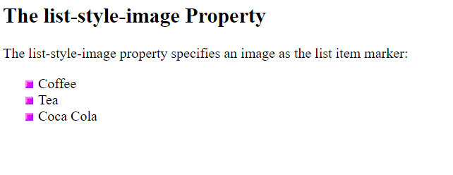
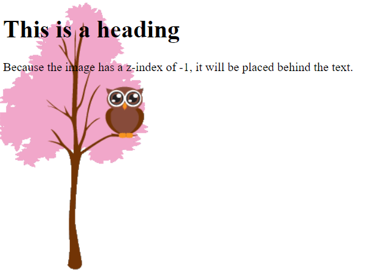
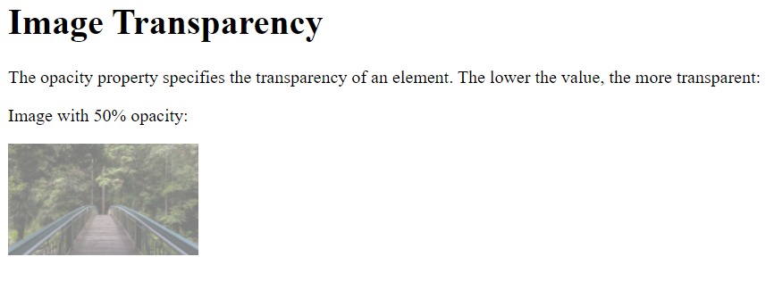
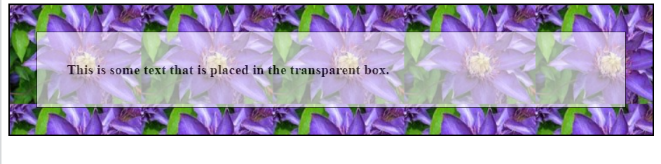

1. Write css code for this output using 5 div tags. RUN CODE 2. Write CSS code for this output using margin. Here the height and width of the div is 200px. RUN CODE 3. Write CSS code for this output using margin. Here the height and width of the div is 200px. RUN CODE 4. Write CSS code for this output using margin. Here the height and width of the div is 200px. RUN CODE 5. Write CSS code for this output using margin. Here the height and width of the div is 200px. RUN CODE 6. Write CSS code for this output using margin border, and padding. At the place of text give your name and at the place for image add your image. RUN CODE 7. Write CSS code for this output using margin and display inline-block. Here the height and width of the div is 200px. RUN CODE 8. Write CSS code for this output using margin and display inline-block. Here the height and width of the div is 200px. RUN CODE 9. Write CSS code for this output using margin and font properties. RUN CODE 10. Write CSS code for this output.
RUN CODE 11. Write CSS code for this output. RUN CODE 12. Write CSS code for this output. RUN CODE 13. Write CSS code for this output. RUN CODE 14. Write CSS code for this output.
RUN CODE 15. Write CSS code for this output. RUN CODE 16. Write HTML and CSS code for this output.
RUN CODE 17. Write HTML and CSS code for this output. Use two different fonts for heading and sub text. RUN CODE 18. Write HTML and CSS code for this output. Use two different fonts for heading and sub text. RUN CODE 19. Write HTML and CSS code for this output. RUN CODE 20. Write HTML and css code for the gmail compose button. RUN CODE 21. Write HTML and css code for this button. RUN CODE 22. Write HTML and css code for this button, and when we hover over the button the colour and background must change. RUN CODE 23. Write HTML and css code for this share button, For the icon use font awesome. RUN CODE 24. Write HTML and css code for this button, and hover and active capacity will be 0.5 and 0.7 respectively. RUN CODE 25. Write HTML and css code for the navbar using flex. RUN CODE 26. Write HTML and css code for the navbar using flex. RUN CODE 27. Write HTML and css code for this output.
RUN CODE 28. Write HTML and css code for this output. RUN CODE 29. Write HTML and css code for the about us. Add two images using position relative and rotate the image. RUN CODE 30. Write HTML and css code for the footer of the website. RUN CODE 31. Write HTML and css code for this output. RUN CODE 32. Write HTML and css code for this output. RUN CODE 33. Write HTML and css code for this button and when we hover it's size increases. RUN CODE 34. Write HTML and css code for this output. RUN CODE 35. Write HTML and css code for this output, and when we hover any card, pink border should appear. RUN CODE 36. Create your CV using html and css.RUN CODE 37. Write HTML and css code for this landing page. RUN CODE 38. Write HTML and css code for this output. RUN CODE 39. Write HTML and css code for this output. RUN CODE 40. Set an image as background of a page. RUN CODE 41. How to position a background image only horizontally. RUN CODE
42.A fixed background, this image will not scroll with the rest of the page.RUN CODE 43. Advanced background example. RUN CODE 44. Demonstrating the box model.
RUN CODE 45. Set the style of the outline. RUN CODE 46. Specify a text shadow for an element. RUN CODE 47. Using icons. RUN CODE 48. All list markers RUN CODE 49. Set an image as the list markers. RUN CODE 50. Position an element with an absolute value. RUN CODE 51. Overlapping elements. RUN CODE 52. Show the display properties using inline, inline-block and block.RUN CODE 53. Creating transparent image. RUN CODE 54. Creating a transparent box with text on a background image. RUN CODE 55. Create a dropdown text.RUN CODE 56. Create a dropdown menu in navigation bar.RUN CODE 57. Creating the following image. RUN CODE 58. Create elliptical corners. RUN CODE 59. Linear gradient. RUN CODE 60. Transition( Change width and height of an element ). RUN CODE 61. Add a transformation to a transition effect. RUN CODE 62. Convert the image into grayscale. RUN CODE